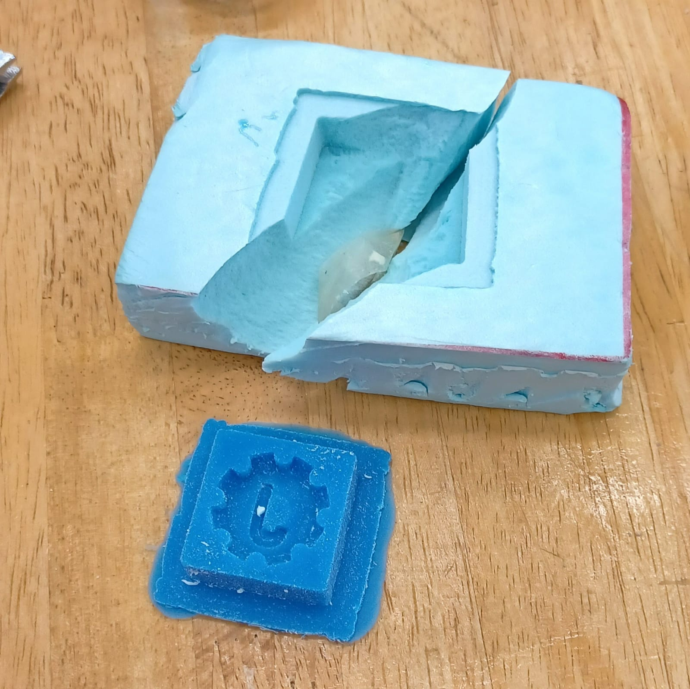

Moulding and casting
Chapter requirements:
- Safety datasheet for resin and hardener etc
- Design master (mold of the mold) for mold (must be 3 axis)
- Mill it (rough + finish cut)
- Make silicone mold
- Cast parts from the silicone mold
Drawing a general side profile.
After doing a revolve operation on the profile.

After drawing a circle, using the circular pattern tool, and a simple extrude cut, I end up with this.

Creating a new sketch, using the text tool and extruding a few mm.
Now to model the outer wall that contains the mold compound. I created a new sketch, drew a square(using the centre rectangle tool), and offset the geometry outwards by 5mm.

A quick extrude later,
Now to generate the gcode for the stepcraft CNC. These are the settings that i had to change(i used the plastic roughing preset). Mainly, I selected the outer region of the box in order to limit machining to the area inside. I also, changed the chip load to half the diameter of the endmill as advised by Mr Chew. Lastly, fine stepover was reduced to 0.2mm to reduce the staircase effect (the default settings resulted in excessive stepping due to the small size of the model).

This is a preview of the toolpath.

In order to export gcode for the stepcraft cnc, i have to postprocess the toolpath to make a nc file.
Preview of final cnc product.

Milling the master. It is worth noting that the mold ended up with strange unmilled areas, leading to foam towers in the mold. This could have been cause by the use of an undersized bit.

In order to minimise bubbling, the silicone was first placed in a vacuum chamber and allowed to settle. The bubbles you see were introduced when it was stirred quite vigourously.

After cleaning up the foam dust and debris, the debubbled silicone was poured into the mold


As can be seen, the vacuum made the air bubbles bigger, causing them to rise to the top. This reduces the amount of surface imperfections in the final result.
There were still too many bubbles
As can be seen, the cast came out with some defects. This could be because I used a styrofoam cup to transfer the resin for mixing and this could have introduced air bubbles into the cast. Furthermore, I wasn't sure if it was safe to pull a vacuum on the whole cast after the resin was poured, which could be why some air bubbles could have been trapped on the bottom.